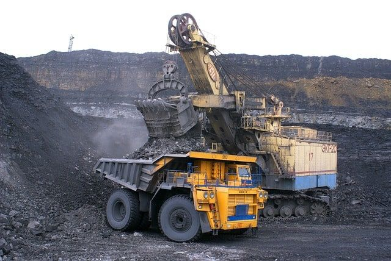
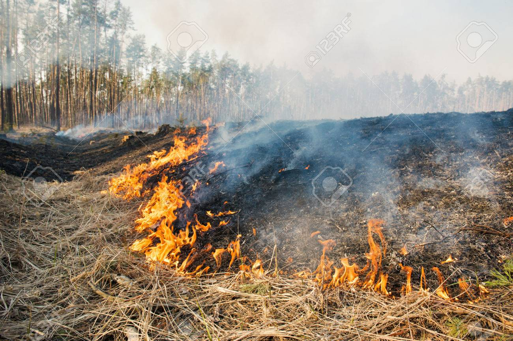

Many coal mines release methane, a greenhouse gas. Smelter operations with insufficient safeguards in place have the potential to pollute the air with heavy metals, sulphur dioxide, and other pollutants. ... This, together with various trace elements impacts groundwater, both from the surface and underground mines.
Agricultural pollution is the main source of pollution in water and lakes. Chemicals from fertilizers and pesticides make their way into the groundwater that ends up in drinking water. ... Oil, degreasing agents, metals and toxins from farm equipment cause health problems when they get into drinking water.
